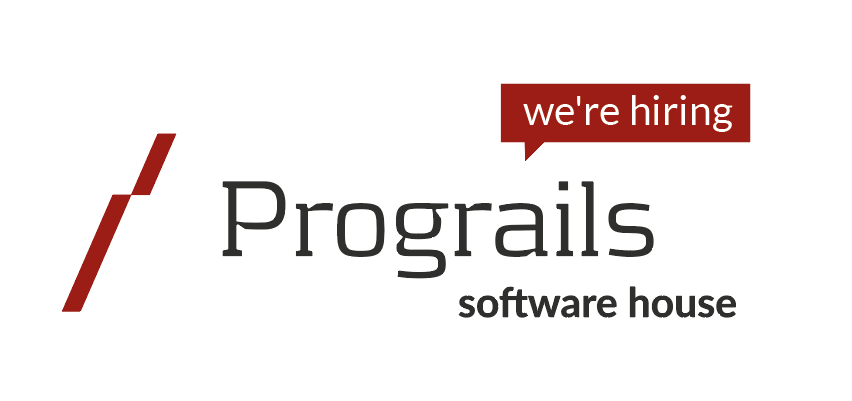
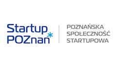

You learn designing, prototyping and coding with the help from our coaches.
You need your own laptop, curiosity and a sprinkle of imagination!
Want to help? We are looking for volunteers and Rails coaches. Email us.
| 18.00 - 20:00 |
Installation partyGet know the attendees a little bit before hand. Bring your laptop if you can, so we can install Ruby on Rails for you.Sponsors, boyfriends, girlfriends and developers that happen-to-be-in-the-neighborhood are more than welcome to join. |
|---|---|
| 20:00 - 22:00 |
Coach DinnerAll of the coaches are welcome to our coach dinner! Thank you for supporting Rails Girls Poznan! |
| 9:00 - 10:00 |
Breakfast, coffee, registration.Coffee, cake, code. |
|---|---|
| 10:00 - 13:00 |
WorkshopHands-on, minds-on learning! Meet Ruby, Rails and much more. |
| 13:00 - 13:45 |
Lunch |
| 13:45 - 14:00 |
Bentobox - Understanding Web Apps |
| 14:00 - 15:00 |
Lightning Talks |
| 15:00 - 18:00 |
WorkshopExtend your application. |
| 19:00 |
AfterpartyOpen for everyone, meet cool people interested in tech. Location: Piwna Stopa Szewska 7, Poznań |
Codzienny Poznan
Lepszy Poznan
Dziennik Internautów
dalach.blogspot.com
melain.wordpress.com
Moje Miasto Poznan
Lepszy Poznan
Codzienny Poznan
WEBROAD.pl
Nasze Miasto
Lepszy Poznan
Application opening: October 12, 2015
Application deadline: October 26, 2015
Acceptances informed: November 3, 2015
Location: InQbator, ul. Rubież 46 (bud. C, wejście 4), 61-612 Poznań
Rails Girls Poznan would not be possible without our amazing sponsors! Want to help? Drop us a line! We're looking for partners & sponsors for the non-profit event!
InQbator is the work of Poznan Science-Technology Park of UAM foundation, which assists the development of newly created companies, as well as ideas to begin one.
Prograils Web & Mobile development team. Agile Software House that creates world class software and applications for startups and on-line businesses. Plus, they love Ruby on Rails just like Rails Girls do.
 Sii With over 2,000 engineers, Sii is the Top IT and Engineering services provider in Poland. We execute various technology projects for leading Polish and multinational companies. We support our clients within the scope of software development, IT infrastructure, product engineering, service desk and testing.
Sii With over 2,000 engineers, Sii is the Top IT and Engineering services provider in Poland. We execute various technology projects for leading Polish and multinational companies. We support our clients within the scope of software development, IT infrastructure, product engineering, service desk and testing.
 Netguru is an Agile Ruby agency with excellent track record and great communication skills. We love to develop web and apps! Give us a ping!
Netguru is an Agile Ruby agency with excellent track record and great communication skills. We love to develop web and apps! Give us a ping!
CITY NET Competing broadband service provider in Swarzedz that offers a good value all-round package for fast broadband, phone and TV in high definition and No Ball & Chain deals.
East & West One of the biggest ISPs in Greater Poland with 20+ year experience. Provides services to thousands of customers in Poznan and some other cities in Poland. Competing prices for High-speed Internet both Cable and fiber based (FTTH), best HD TV offer and VoIP telephony.
Rails Girls Poznan is co-organized with our awesome partners and supporters.
Startup Poznań initiative, under which the City of Poznań, in cooperation with representatives of companies and institutions from Poznań, strive for development of the best possible support programme for young companies operating on the basis of knowledge and new technologies. The aim of the project is to promote startups, support their development, enable access to essential knowledge and develop local startup ecosystem.
How much does the workshop cost? Nothing, it's free! You just need to be excited!
Who is this aimed for? Women of any age with basic knowledge of working with a computer. We’ve had people of all ages taking part. Most of the program is run in english and please bring your laptop.
How do you choose the attendees? We want a diverse group of people who are motivated and curious about learning.
Can men attend? Yes, but you need to be accompanied by an interested lady. Also, girls are given a priority.
I know how to program - How can I help? We’re also looking for people to be coaches.
 Asia Ignaczak, organizer
@j_ignaczak
Asia Ignaczak, organizer
@j_ignaczak
 Monika Filipkowska, organizer
@Gondorya
Monika Filipkowska, organizer
@Gondorya
 Dominika Stempniewicz, organizer and coach
dominika
Dominika Stempniewicz, organizer and coach
dominika